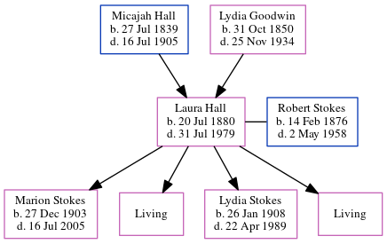

Laura Stokes (née Hall) 1880 - 1979
[ Home ] | [ Calendar ] | [ Surnames Index ] | [ Census Index ] | [ Family History ]The child of Micajah Hall and Lydia Goodwin, Laura Hall, the wife of Robert Marion Stokes (the great-great-uncle of Michele Copp (née Phillips)), was born in Atlanta, Fulton, Georgia, USA on Jul 20, 18801,2,3,4,5 and married Robert (with whom she had 4 children: Marion Jeanette, Laura Louise, Lydia Goodwin and Carolyn, along with 2 surviving children) on Apr 17, 1901 (Fr. Basin).
During her life, she was living in Militia District, Black Hall (Part, Excl. Atlanta City), Fulton, Georgia in 19001; in Atlanta Ward 4, Fulton, Georgia in 19102; and in Hyde Park, Hillsborough, Florida in 19303.
She died on Jul 31, 1979 in Orlando, Brevard, Florida, USA4,5.
Parents
- Micajah was born on Jul 27, 1839
- Lydia Ann Missouri was born on Oct 31, 1850
Children
- Marion Jeanette was born on Dec 27, 1903
- Lydia Goodwin was born on Jan 26, 1908
Citations
- 1900 United States Federal Census Online publication - Provo, UT, USA: MyFamily.com, Inc., 2004.Original data - United States of America, Bureau of the Census. Twelfth Census of the United States, 1900. Washington, D.C.: National Archives and Records Administration, 1900. T623, 1854 rolls.
- 1910 United States Federal Census Online publication - Provo, UT, USA: The Generations Network, Inc., 2006. For details on the contents of the film numbers, visit the following NARA web page: NARA.Original data - United States of America, Bureau of the Census. Thirteenth Census of the Unit
- 1930 United States Federal Census Online publication - Provo, UT, USA: MyFamily.com, Inc., 2002.Original data - United States of America, Bureau of the Census. Fifteenth Census of the United States, 1930. Washington, D.C.: National Archives and Records Administration, 1930. T626, 2,667 rol
- Florida Death Index, 1877-1998 Online publication - Provo, UT, USA: The Generations Network, Inc., 2004.Original data - State of Florida. Florida Death Index, 1877-1998. Florida: Florida Department of Health, Office of Vital Records, 1998.Original data: State of Florida. Florida Death I
- Social Security Death Index Online publication - Provo, UT, USA: MyFamily.com, Inc., 2006.Original data - Social Security Administration. Social Security Death Index, Master File. Social Security Administration.Original data: Social Security Administration. Social Security Death Inde
Family Tree
Generated by ged2site. Last updated on Jun 6, 2024